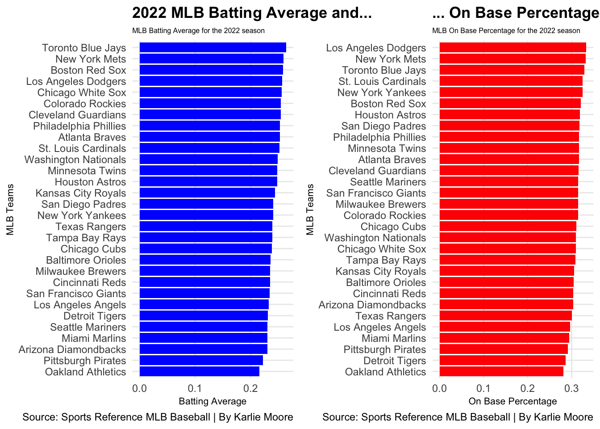
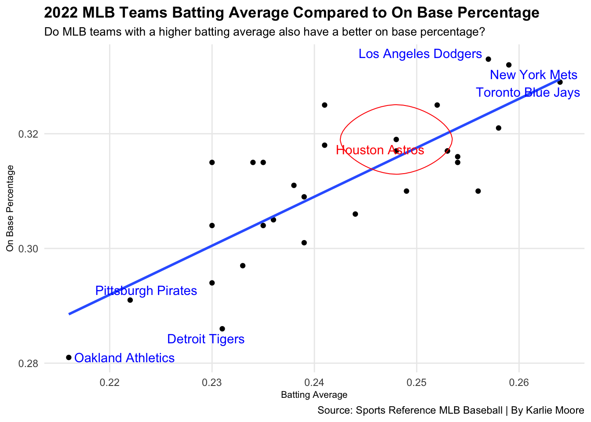
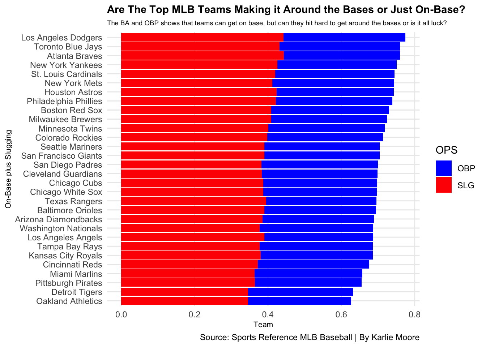

Code
library(tidyverse)
library(ggalt)
library(ggrepel)
library(cowplot)
library(ggbeeswarm)Karlie Moore
April 13, 2023
I have been to a number of MLB baseball games living a full country away, yet only 15 minutes from the Detroit Tigers Comerica Park. The last game I went to in the summer of 2022, the Tigers were hitting “the leather off the ball,” as my brother would say. They had the bases loaded a few times throughout the game, but they lost.
The goal of baseball, of course, is to score more runs that your opposition. This can only be achieved with strong bats, strategic hits, and sometimes a little bit of luck. Wouldn’t it make sense that the team who has the better batting average and players that get on base more would be the victors?
When analysing the batting averages and on base percent of MLB teams for the 2022 season, it is interesting to compare the final standings with the batting averages and on base percent of the teams. Did the most successful teams have the most impressive stats when it comes to batting averages and on base percent? Did the teams at the bottom of the barrel have the worse stats?
Let’s start by examining batting averages. Which teams had the best batting averages and how did they finish in the standings for the season?
Batting average is calculated as the number of hits divided by the number of times at bat. The Toronto Blue Jays, New York Mets, and Boston Red Sox were 1, 2, 3 in Batting Average in 2022 of the 30 teams in the MLB. How does this compare to their season results? Both Toronto and New York finished second in their divisions, the America League East and National League East respectively, but Boston, with the third best team batting average were last in the American League Division. What does this mean? While the Red Sox were able to pound the ball, they weren’t able to close the deal and score the runs on base, so while they look good at the plate while hitting, they couldn’t seem to find their way back to the plate after getting on base.
Another interesting fact when looking at the graph is that the 2022 MLB Champions, the Houston Astros are about halfway down the pack when it comes to batting average. Perhaps batting average is not an overall accurate indicator of overall success.
Hits turn into base running, so perhaps looking at on base percent will help explain success.
bar1 <- ggplot() +
geom_bar(data=MLBTeamStats, aes(x=reorder(Tm, BA), weight=BA), fill= "blue") +
coord_flip() +
labs(
x= "MLB Teams",
y= "Batting Average",
title= "2022 MLB Batting Average and... ",
subtitle= "MLB Batting Average for the 2022 season",
caption="Source: Sports Reference MLB Baseball | By Karlie Moore"
)+
theme_minimal() +
theme(
plot.title = element_text(size = 13, face = "bold"),
axis.title = element_text(size = 8),
plot.subtitle = element_text(size = 6),
panel.grid.minor = element_blank()
)
bar2 <- ggplot() +
geom_bar(data=MLBTeamStats, aes(x=reorder(Tm, OBP), weight=OBP), fill= "red") +
coord_flip() +
labs(
x= "MLB Teams",
y= "On Base Percentage",
title= "... On Base Percentage ",
subtitle= "MLB On Base Percentage for the 2022 season",
caption="Source: Sports Reference MLB Baseball | By Karlie Moore"
)+
theme_minimal() +
theme(
plot.title = element_text(size = 13, face = "bold"),
axis.title = element_text(size = 8),
plot.subtitle = element_text(size = 6),
panel.grid.minor = element_blank()
)
plot_grid(bar1, bar2)
Baseball experts would argue that on base percent is a more reliable and more accurate measure of success that a batting average, as base percent takes into account all of a player’s plate appearances, including walks, hits by a pitch, and sacrifice hits. So, is this an accurate statement? Did the teams with the best base percent have more success?
Of the top six teams in the on base percent results, five of them finished first or second in their respective divisions. On base percent does seem to be a better predictor of overall success than batting average, but still does not guarantee success. The Houston Astros, 2022 MLB champs, had better on base percent than batting average ranking 7th.
Now let’s look at the stats combined. Do teams with the best batting average also have the highest on base percent?
Top <- MLBTeamStats %>%
filter(
Tm == "Los Angeles Dodgers" |
Tm == "New York Mets" |
Tm == "Toronto Blue Jays"
)
Bottom <- MLBTeamStats %>%
filter(
Tm == "Oakland Athletics" |
Tm == "Pittsburgh Pirates" |
Tm == "Detroit Tigers"
)
HoustonAstros <- MLBTeamStats %>%
filter(Tm == "Houston Astros")
ggplot() +
geom_point(data=MLBTeamStats, aes(x= BA, y= OBP)) +
geom_smooth(data=MLBTeamStats, aes(x=BA, y= OBP), method="lm", se=FALSE) +
geom_text_repel(
data=Top,
aes(x=BA, y=OBP, label=Tm), colour="blue") +
geom_text_repel(
data=Bottom,
aes(x=BA, y=OBP, label=Tm), colour="blue") +
geom_text_repel(
data=HoustonAstros,
aes(x=BA, y=OBP, label=Tm), colour="red") +
geom_encircle(
data=HoustonAstros,
aes(x=BA, y=OBP), s_shape=.01, expand=.006, colour="red") +
labs(
x= "Batting Average",
y= "On Base Percentage",
title= "2022 MLB Teams Batting Average Compared to On Base Percentage ",
subtitle= "Do MLB teams with a higher batting average also have a better on base percentage?",
caption="Source: Sports Reference MLB Baseball | By Karlie Moore"
)+
theme_minimal() +
theme(
plot.title = element_text(size = 13, face = "bold"),
axis.title = element_text(size = 8),
plot.subtitle = element_text(size = 10),
panel.grid.minor = element_blank()
)
It appears so. The LA Dodgers and NY Mets have both the highest batting averages and on base percentages, while the Pirates and Oakland A’s are scraping the bottom of the barrel on both counts. In terms of season success, these stats make sense, as the Dodgers were first and the Mets second in their divisions, while Pittsburg and Oakland both finished last in theirs. While the Pirates and Oakland did not make post season, play-offs, the La Dodgers and New York Mets did.
What if we took away the trips to first base that were not actually hits by the batter? If walks and hits-by-pitches is removed from the equation, slugging percent speaks to the true batting skill of a team. Do slugging percentages with On Base Percent identify the most successful teams? The natural thought process would be that the best hitting teams that get on base would be most successful, and these stats seem to prove that. The LA Dodgers, Toronto Blue Jays, Atlanta Braves, and New York Yankees rank as the top four teams when it comes to slugging and on-base percent. All of these teams finished first in their divisions with the Blue Jays finishing second behind the Yankees. These guys are getting on base and sending their teammates for runs! Kind of the point of baseball. Ironically enough, only one of these teams made it to the final four of the MLB 2022 play-offs. The saying, “Stats don’t lie” tends to be true when it comes to baseball, but you still have to show up when it matters!
OPS <- MLBTeamStats %>%
select(Tm, OBP, SLG) %>%
pivot_longer(cols = -Tm, names_to = "Stat", values_to = "Percent")
ggplot() +
geom_bar(data=OPS,aes(x=reorder(Tm, Percent), weight= Percent, fill=Stat))+
scale_fill_manual(name="OPS", values=c("blue", "red")) +
coord_flip() +
labs(
x= "On-Base plus Slugging",
y= "Team",
title= "Are The Top MLB Teams Making it Around the Bases or Just On-Base?",
subtitle= "The BA and OBP shows that teams can get on base, but can they hit hard to get around the bases or is it all luck?",
caption="Source: Sports Reference MLB Baseball | By Karlie Moore"
)+
theme_minimal() +
theme(
plot.title = element_text(size = 11, face = "bold"),
axis.title = element_text(size = 8),
plot.subtitle = element_text(size = 7),
panel.grid.minor = element_blank()
)
Conclusion? There is a correlation between batting averages and on base percent, and while those teams who score high in both areas are more likely to have more success than those whose results are lower, it doesn’t guarantee championships. Again, the 2022 MLB champions, the Houston Astros were not the best in either category or both combined, but in the end, they took home the hardware!